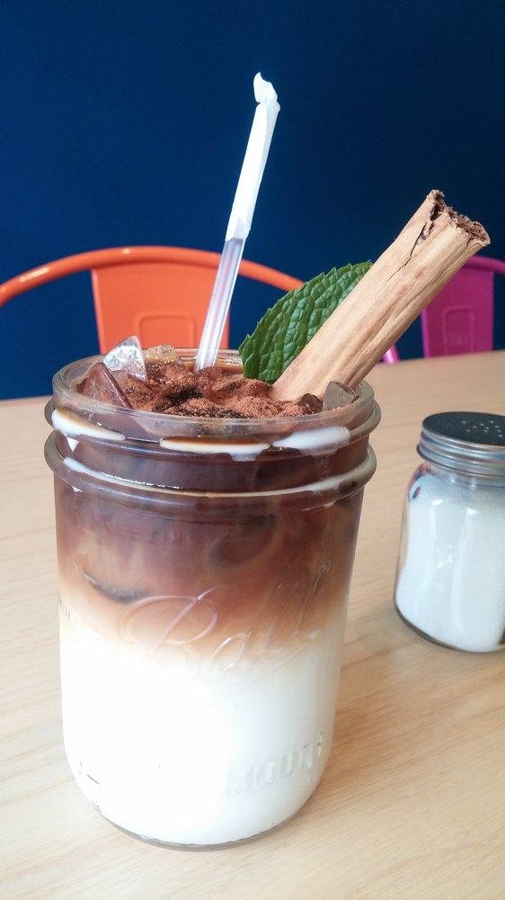

I distinctly remember my first cold brew coffee (with coconut milk, of course). I was sitting in the sun at Pannikin after a long run with friends. Nothing had ever tasted so delicious.
| Cold brew + Nitro! | Cold brew + Horchata! | |
| A sweeter and creamier version of the original can be made by adding nitrogen, usually by storing in a pressurized keg and pouring from a tap. | Possibly one of the most ingenious combinations to date, it's only a matter of time before this delightful beverage gains a cult following. | |
|  | ||
| Laura Metzler / BuzzFeed | Mateo's Taqueria / Yelp |